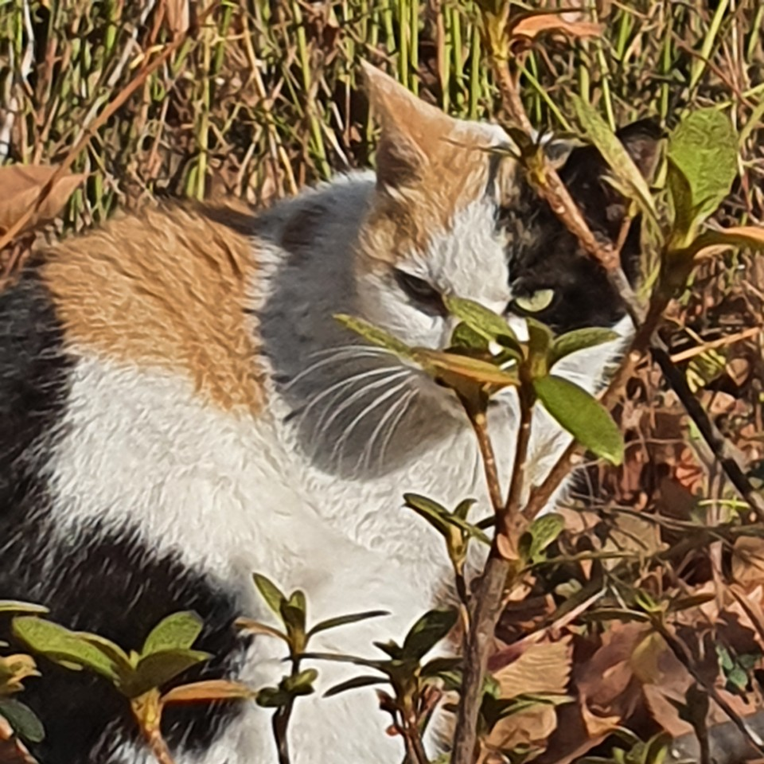

출생연월일이 불명한 길냥이 . 잠실 삼전동에있는 놀이터에서 처음 발견했다.종은코리안 숏헤어이다. 흰색 바탕털에 검정, 갈색 얼룩을 가지고 있는 삼색냥이 . 눈빛이 아주 매섭다.

songsongsong이 물을 주는 놀이터냥이며,노란 눈동자를 가지고있다.매서운 눈빛 때문에 매시라고 부른다고한다. 길가는 사람들 다 죽일 것 같은 매서운 눈빛을 봐서는 매우 사나울 것처럼 보이지만,놀이터 냥이들 중 가장 자주 밖에 나와서 햇볕을 쐼. 사진과는 다르게 실제로 보면 좀 작은편. 까다로울 것 같은 외모와는 다르게 가장 자주보이고, 다들 외면하는 송인재픽 주식캔도 먹는 까다롭지 않은 입맛을 가진 유일한 놀이터냥.매서운 얼굴과 그렇지 못한태도.